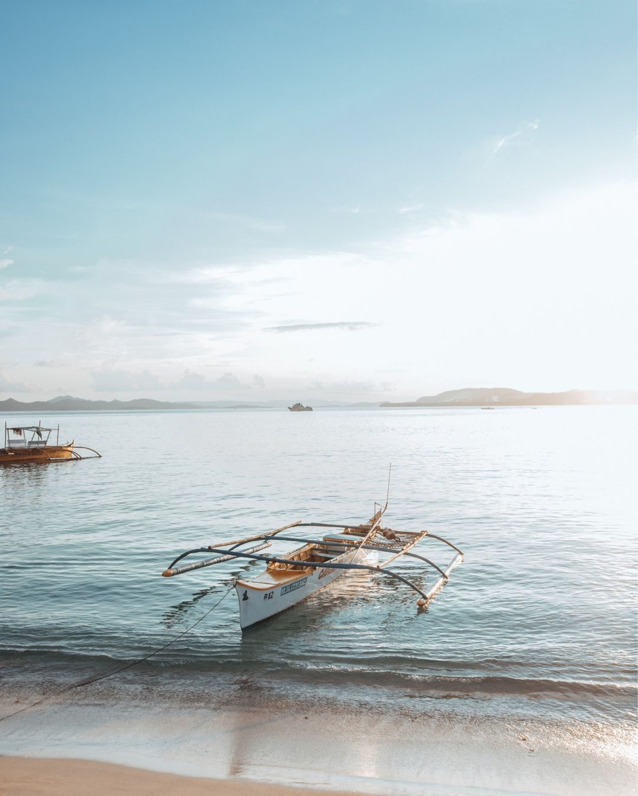
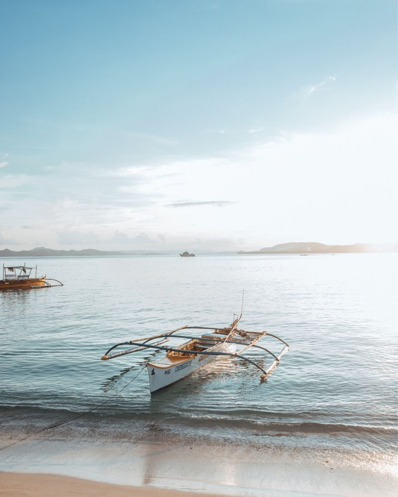

A small island (169 sq miles) in the province of Surigao del Norte. The name of the island comes from the Visayan Language (A Central Filipino Dialect) for the specific type of mangrove found all over the islands, Siargaw (Premna Odorata). Offshore on the westside of Siargao is nothing but the massive Pacific Ocean. The full force of the Pacific Ocean comes crashing into Siargao, creating some world-class waves. The reefs running along with western shore drop off quickly to the extremely deep Philippine Trench giving the potential for big waves.

 

The largest urban center in Southern Philippines and the third-largest metropolitan area in the Philippines after Manila and Cebu. Davao is famous for its natural attractions, many of which are easily reached from the city center. Within an hour’s travel from the airport or Davao City hotels, you can already enjoy the pristine white sand beaches of Samal Island or visit the highland nature parks at the foot of Mount Apo, the Philippines’ tallest peak.

South Cotabato is one of the places in Mindanao that tourists keep on coming back to, amidst security threats that have clouded Mindanao. Like other regions in Mindanao, South Cotabato capitalizes on its rich and beautiful nature. Its fertile soil has paved the way to migrations as well as to agricultural industries. Known as the “ Land of the Dreamweavers”, South Cotabato is home to the T’boli tribe, known for their weaving art that bases its patterns on their dreams. Lakes, waterfalls, vast plantations and well-preserved tradition, South Cotabato opens the doors to the picturesque southern region of Mindanao. Enjoy these activities whenever you are in South Cotabato.